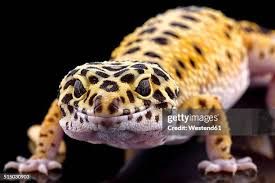

paulo gomes queria se divertir a noitada
voçe chega na mansao hendroxiana e encontra seu mano com uma idea fantastica
vc chega no boteco e pede uma breja mas percebe uma mulher interresante proximo a voçe
vc e seu mano chegam no bailao mas ele parece desanimado

vcs decidem pedir pizza e ver um filme
olhando mais a diante em direçao ao horizonte vc ve a lenda . p>
conversando com ela vc perceb nao e uma mulher e sim o alexandre de morais com peruca
paulo gogos te oferece um copao de toddy
voce por sorte consegue escapar do xande de morais
vc e paulo gogos viram grandes amigos ele te convida para ordem dos templarios
paulo gogos saca sua espada europeia e te executa com um unico golpe
vc vive servindo a Deus e combatendo as forças do mal
vc encontra descanso apos sua execuçao